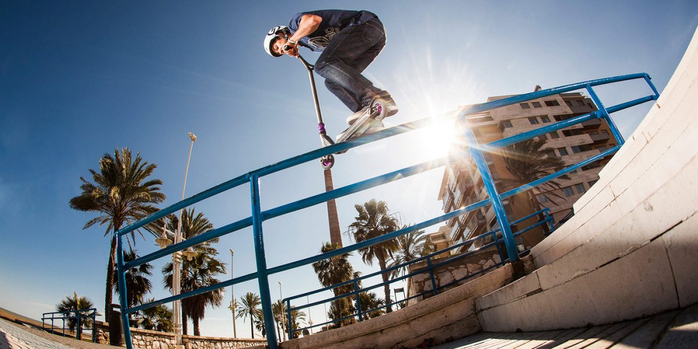
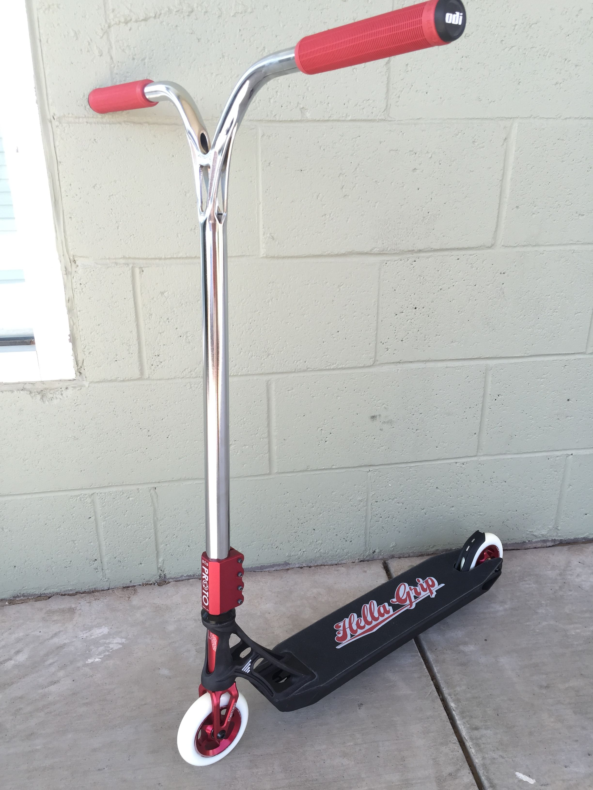
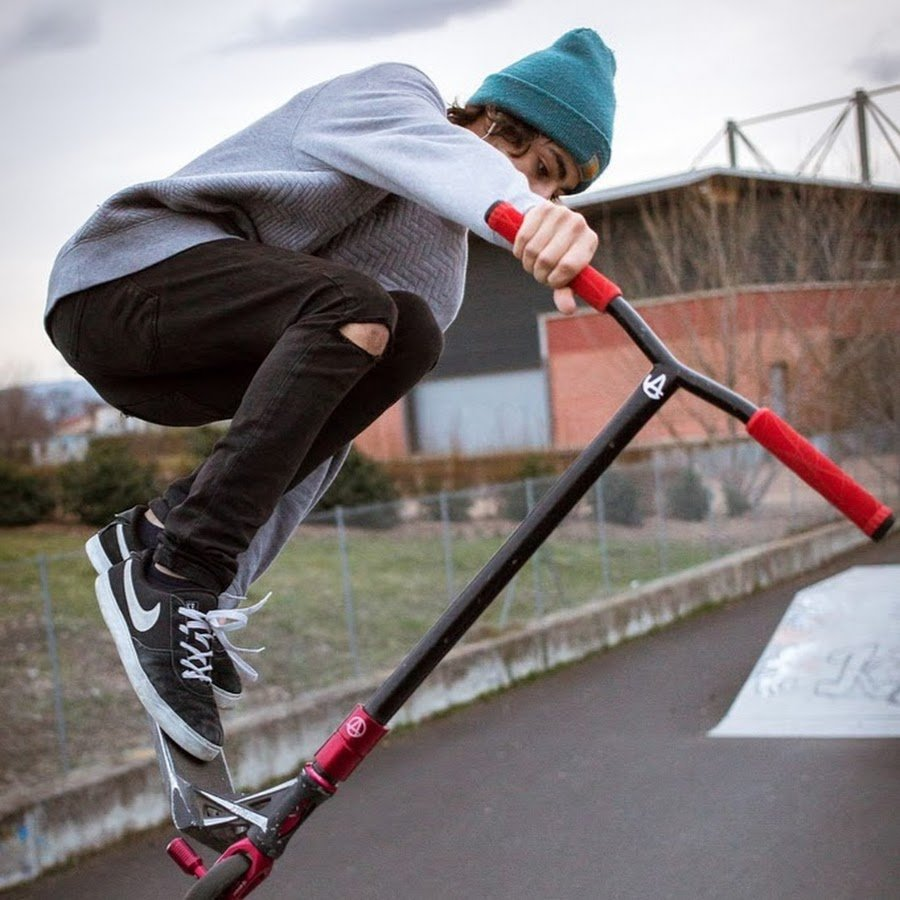

Самокатный спорт зародился в США в начале 2000-х, когда появились модели детских самокатов выдерживающие средние нагрузки. Их начали использовать уличные экстремалы для исполнения трюков взятых из других экстрим-дисциплин (скейт, bmx). Стали появляться первые видео от райдеров в интернете, благодаря чему этот вид спорта стал известным всему миру. Он начал быстро набирать популярность в Австралии и странах Европы. Стали проводится соревнования, появились фирмы производящие трюковые самокаты, образовались международные команды. Только к 2007 году кикскутеринг начал набирать обороты в России, Беларуси и Украине.
К 2010 году самокатный спорт обрёл серьёзный характер, став вместо подросткового увлечения, профессиональной спортивной дисциплиной
В 2011 году начала функционировать международная самокатная ассоциация ISA (International Scooter Association), в которую вошли США, Австралия, Англия и Европа. Ежегодно стал проводиться Чемпионат мира по трюковому самокату — ISA World Championship, включающий в себя серию региональных квалификаций.

Конструкция трюкового самоката

Дека — платформа, на которой стоят во время езды. Деки отличаются по длине и ширине. Размер зависит от размера обуви самокатера и от стиля катания. Для катания в стриту обычно выбирают более широкие, так как на них удобнее контролировать самокат, в момент скольжения по перилам. Для катания в парке наоборот выбирают узкие и легкие деки, так как на них будет легче исполнять техничные трюки. Деки для стрита оснащены и декендами, либо же квадратными дропаутами.
Руль — неотъемлемая часть любого самоката. С помощью руля самокатер удерживает равновесие, и направляет самокат в нужную сторону. Руль также отличаются по высоте и ширине. Руль подбирается по высоте райдера. Наиболее удобным будет руль, который ниже райдера на 80-110 сантиметров.
Колеса — на всех самокатах имеются два колеса. Колеса отличаются по диаметру, колеса бывают размером 100 мм, 110 мм, 120 мм, 125 мм. Скорость самоката зависит от диаметра колеса, чем больше диаметр, тем выше будет скорость.
Компрессионная система — это способ, с помощью которого руль закрепляется на вилке. Существует пять основных видов компрессионных систем: резьбовая, SCS, HIC, IHC и ICS.2 Для каждой компрессионной системы подойдут разные по характеристикам вилки и рули. При этом, компрессионная система SCS не требует пропила в руле.
Вилка соединяет колесо с компрессионной системой.
Шкурка — кусок специальной наждачной бумаги, который клеится на деку, чтобы избежать скольжения во время катания.
Грипсы — накладки на руль, предотвращающие скольжение рук по рулю во время катания. Иногда вместо грипс используется обмотка.
Рулевая — обеспечивает вращение деки самоката на 360 градусов.
Вращения деки — все возможные вращения деки самоката (tailwhip, heelwhip, kickless, fingerwhip, unless, и др.)

Дисциплины
Парк — катание по специально оборудованной экстрим-площадке: скейт-парке.
Стрит — катание по уличным спотам: ступени, перила, парапеты, дропы и т. д.
Флэт — исполнение трюков на плоскости. С каждым годом людей, которые катаются в данной дисциплине всё меньше.
Биг-эйр — специально сконструированный большой трамплин.
Дёрт — катание по горным спускам и дёрт-паркам с трамплинами на специально оборудованном самокате.
Сноускутеринг — катание по снегу на самокате со специальными досками.
Трюки
Вращения руля — вращения руля самоката одной или двумя руками (barspin, bartwist, untwist, intwist и др.)
Скутер флипс — вращение самоката c помощью рук, есть трюки, где райдер полностью отпускает самокат (briflip, buttercup, nothing frontscooterflip и др.)
Стречинг — растяжки (invert, superman, can-can, no hand и др.)
Гребы — касание частей самоката руками в воздухе (tail grab, nose grab, benihana, toboggan и др.)
Флипы — различные сальто (backflip, frontflip, flair, cork и др.)
Градусы — вращения вместе с самокатом (180°, 360°, 540° и т. д.)
Скольжения — скольжение на деке или пегах самоката (boardslide, feeble, lipslide, hurricane и др.).
Мануалы — езда с балансировкой на одном из колёс (manual, nose manual, hang five)
Трюки могут исполняться одновременно (например 360 backflip barspin), или последовательно, создавая комбинацию (tailwhip to manual to disaster). Мануалы и различные скольжения очень сильно распространены в стриту.
Самокатный спорт еще только развивается, все уверены, что самокатинг станет олимпийским видом спорта совсем скоро!